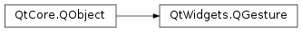

QGesture¶
Inherited by: QPanGesture, QPinchGesture, QSwipeGesture, QTapGesture, QTapAndHoldGesture
Note
This class was introduced in Qt 4.6.
Synopsis¶
Functions¶
- def
gestureCancelPolicy() - def
gestureType() - def
hasHotSpot() - def
hotSpot() - def
setGestureCancelPolicy(policy) - def
setHotSpot(value) - def
state() - def
unsetHotSpot()
Detailed Description¶
The
PySide2.QtWidgets.QGestureclass represents a gesture, containing properties that describe the corresponding user input.Gesture objects are not constructed directly by developers. They are created by the
PySide2.QtWidgets.QGestureRecognizerobject that is registered with the application; seeQGestureRecognizer.registerRecognizer().For an overview of gesture handling in Qt and information on using gestures in your applications, see the Gestures in Widgets and Graphics View document.
Gesture Properties¶
The class has a list of properties that can be queried by the user to get some gesture-specific arguments. For example, the pinch gesture has a scale factor that is exposed as a property.
Developers of custom gesture recognizers can add additional properties in order to provide additional information about a gesture. This can be done by adding new dynamic properties to a
PySide2.QtWidgets.QGestureobject, or by subclassing thePySide2.QtWidgets.QGestureclass (or one of its subclasses).
Lifecycle of a Gesture Object¶
A
PySide2.QtWidgets.QGestureinstance is implicitly created when needed and is owned by Qt. Developers should never destroy them or store them for later use as Qt may destroy particular instances of them and create new ones to replace them.The registered gesture recognizer monitors the input events for the target object via its
PySide2.QtWidgets.QGestureRecognizer.recognize()function, updating the properties of the gesture object as required.The gesture object may be delivered to the target object in a
PySide2.QtWidgets.QGestureEventif the corresponding gesture is active or has just been canceled. Each event that is delivered contains a list of gesture objects, since support for more than one gesture may be enabled for the target object. Due to the way events are handled in Qt, gesture events may be filtered by other objects.
-
class
PySide2.QtWidgets.QGesture([parent=nullptr])¶ Parameters: parent – PySide2.QtCore.QObjectConstructs a new gesture object with the given
parent.PySide2.QtWidgets.QGestureobjects are created by gesture recognizers in theQGestureRecognizer.create()function.
-
PySide2.QtWidgets.QGesture.GestureCancelPolicy¶ This enum describes how accepting a gesture can cancel other gestures automatically.
Constant Description QGesture.CancelNone On accepting this gesture no other gestures will be affected. QGesture.CancelAllInContext On accepting this gesture all gestures that are active in the context (respecting the Qt.GestureFlagthat were specified when subscribed to the gesture) will be cancelled.
-
PySide2.QtWidgets.QGesture.gestureCancelPolicy()¶ Return type: PySide2.QtWidgets.QGesture.GestureCancelPolicy
-
PySide2.QtWidgets.QGesture.gestureType()¶ Return type: PySide2.QtCore.Qt.GestureType
-
PySide2.QtWidgets.QGesture.hasHotSpot()¶ Return type: PySide2.QtCore.bool
-
PySide2.QtWidgets.QGesture.hotSpot()¶ Return type: PySide2.QtCore.QPointF
-
PySide2.QtWidgets.QGesture.setGestureCancelPolicy(policy)¶ Parameters: policy – PySide2.QtWidgets.QGesture.GestureCancelPolicy
-
PySide2.QtWidgets.QGesture.setHotSpot(value)¶ Parameters: value – PySide2.QtCore.QPointFSee also
-
PySide2.QtWidgets.QGesture.state()¶ Return type: PySide2.QtCore.Qt.GestureState
-
PySide2.QtWidgets.QGesture.unsetHotSpot()¶
© 2018 The Qt Company Ltd. Documentation contributions included herein are the copyrights of their respective owners. The documentation provided herein is licensed under the terms of the GNU Free Documentation License version 1.3 as published by the Free Software Foundation. Qt and respective logos are trademarks of The Qt Company Ltd. in Finland and/or other countries worldwide. All other trademarks are property of their respective owners.